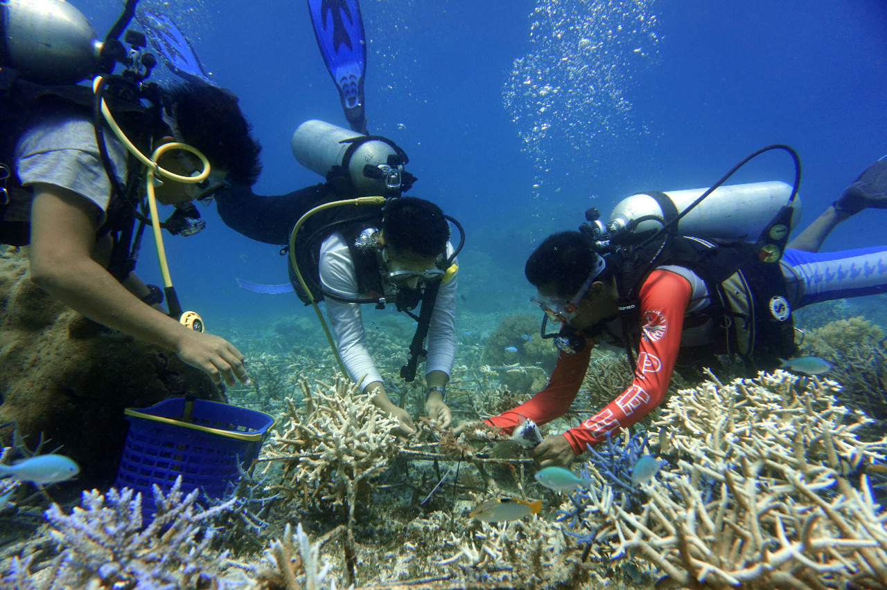
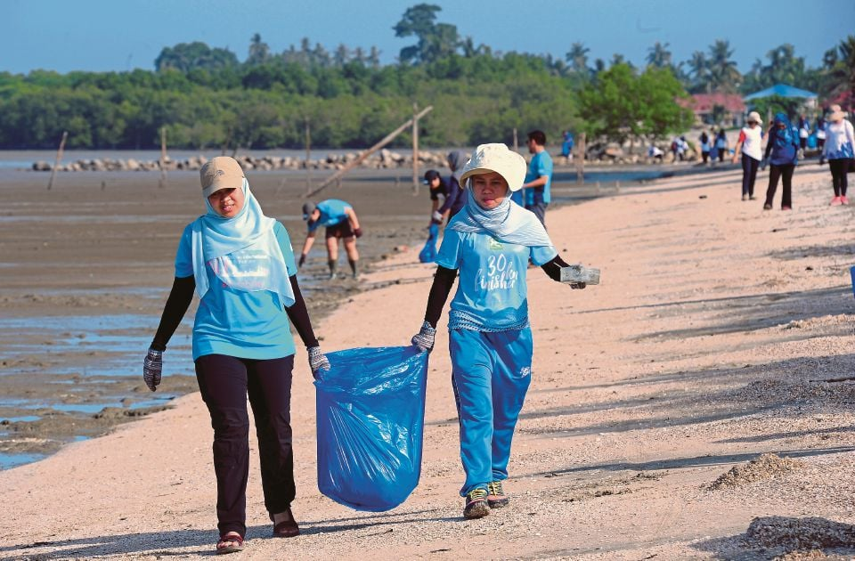
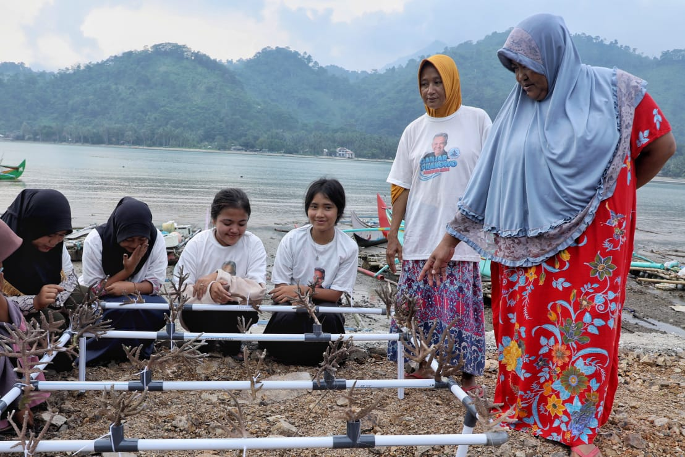

Konservasi Terumbu Karang

Terumbu karang adalah ekosistem yang sangat penting namun rentan. Mereka menghadapi ancaman serius dari perubahan iklim, polusi, dan aktivitas manusia yang tidak bertanggung jawab. Namun, dengan upaya konservasi yang tepat, kita dapat membantu melindungi dan memulihkan terumbu karang ini.
Metode Konservasi

Transplantasi Karang
Menanam fragmen karang yang sehat di area terumbu yang rusak untuk membantu pemulihan.

Pembersihan Pantai
Mengurangi polusi laut dengan membersihkan sampah di pantai dan perairan sekitar terumbu.

Edukasi Masyarakat
Meningkatkan kesadaran tentang pentingnya terumbu karang dan cara melestarikannya.